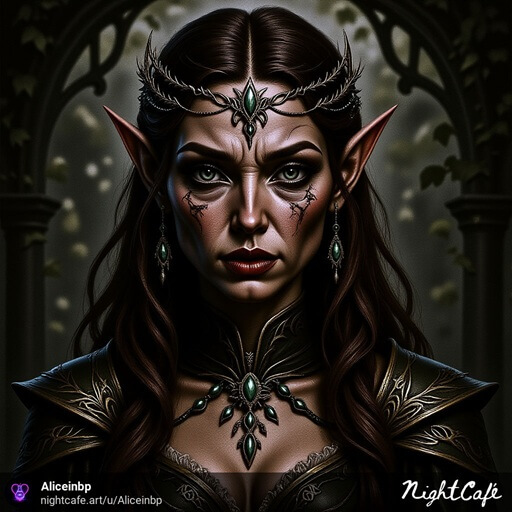
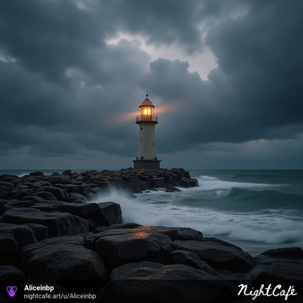
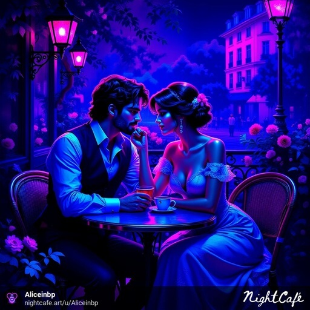

★ Prompt Lab ★
AI Képalkotó Segédlet by Aliceinbp
Összehasonlító Sarok
Egy kép többet ér ezer szónál. Nézd meg, hogyan változtatja meg ugyanazt az ötletet egyetlen kulcsszó!
1. Szett: Művész Stílusok
Alap Prompt:
"portrait of a beautiful elven queen..."
"... in the style of Alphonse Mucha"

"... in the style of H.R. Giger"
"... in the style of Hayao Miyazaki"
2. Szett: Technikai Stílusok
Alap Prompt:
"a lonely lighthouse on a rocky shore..."
"... beautiful watercolor painting"

"... photorealistic, 8k, detailed"
"... ukiyo-e style illustration"
Tematikus Világok
Alap Prompt:
"A couple in love is sitting on a cafe terrace"

"... cyberpunk, neon lighting"
"... steampunk, brass and gears, victorian"

"... solarpunk, lush greenery, clean energy"